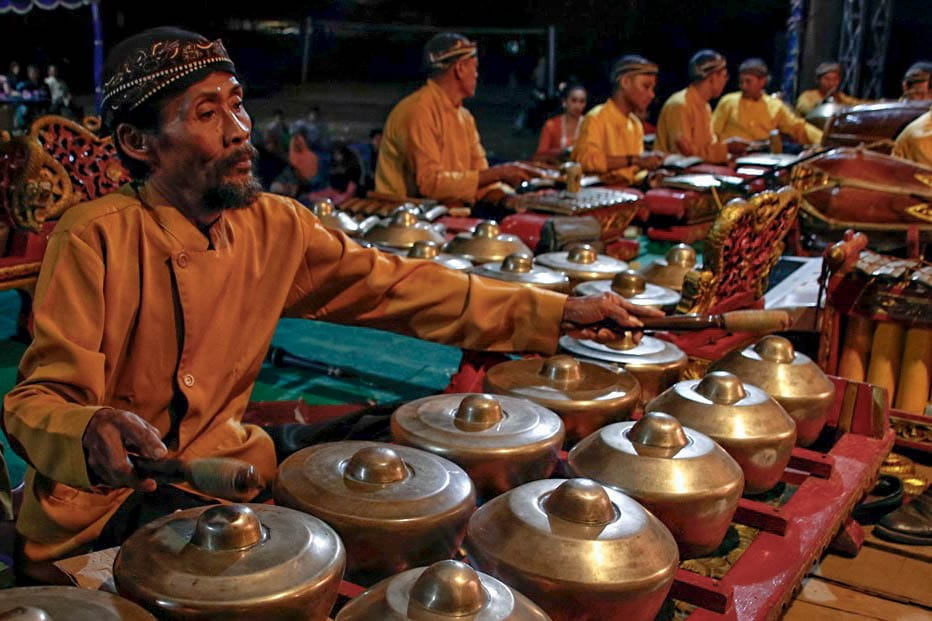

Indonesia, dengan kekayaan budaya dan tradisi yang melimpah, memiliki seni pertunjukan yang beragam dan memukau. Seni pertunjukan Indonesia tidak hanya menjadi hiburan, tetapi juga cerminan nilai-nilai luhur, sejarah, dan identitas masyarakatnya. Dalam era globalisasi, kolaborasi budaya menjadi kekuatan pendorong inovasi dan kreativitas dalam seni pertunjukan, menghasilkan karya-karya yang melampaui batas geografis dan budaya.
1. Gamelan
Gamelan adalah ansambel musik tradisional yang berasal dari Jawa dan Bali. Gamelan terdiri dari berbagai macam alat musik perkusi, seperti gong, saron, bonang, dan kendang. Gamelan tidak hanya dimainkan sebagai iringan tari atau wayang, tetapi juga sebagai bentuk seni pertunjukan yang mandiri. Dalam perkembangannya, gamelan seringkali berkolaborasi dengan seni pertunjukan lain, seperti tari, teater, atau musik kontemporer.
2. Wayang Kulit

Wayang adalah seni pertunjukan tradisional yang menggunakan boneka atau bayangan untuk menyampaikan cerita. Wayang memiliki berbagai macam jenis, seperti wayang kulit, wayang golek, dan wayang orang. Cerita yang ditampilkan dalam wayang biasanya diambil dari epik Ramayana atau Mahabharata. Wayang tidak hanya menjadi tontonan, tetapi juga tuntunan yang mengandung nilai-nilai luhur, seperti kebaikan, kejahatan, dan keadilan.
3. Gambang Kromong

Gambang kromong adalah ansambel musik tradisional Betawi yang terdiri dari alat musik gambang, kromong, gong, kendang, suling, dan kecrek. Gambang kromong seringkali dimainkan sebagai iringan tari atau teater Betawi, seperti lenong atau ondel-ondel. Musik gambang kromong memiliki karakter yang ceria dan dinamis, mencerminkan semangat masyarakat Betawi yang terbuka dan adaptif.
4. Tari Jaipong

Tari jaipong adalah tari tradisional yang berasal dari Jawa Barat. Tari jaipong memiliki gerakan yang energik, lincah, dan menggoda, dengan irama musik yang khas dan membangkitkan semangat. Tari jaipong seringkali ditarikan oleh penari wanita dengan kostum yang berwarna-warni dan menarik. Musik yang mengiringi tari jaipong biasanya terdiri dari gamelan degung, kendang, goong, dan suling.